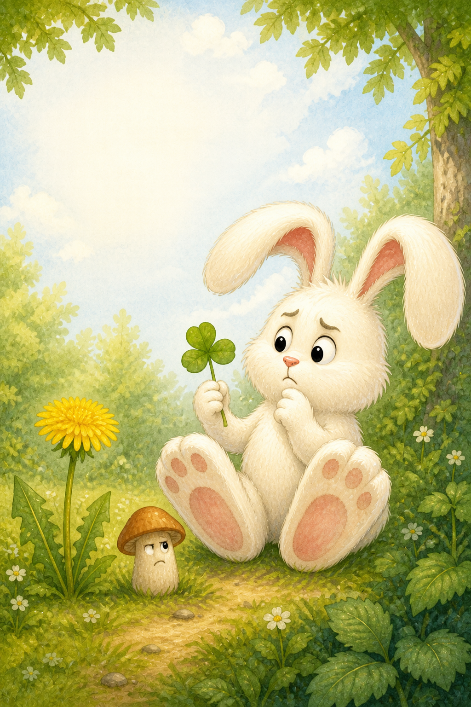
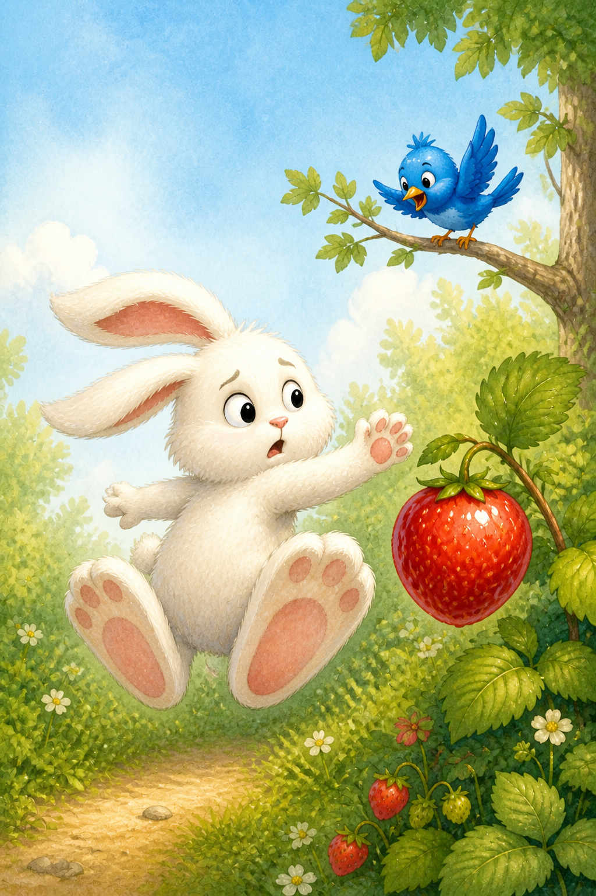
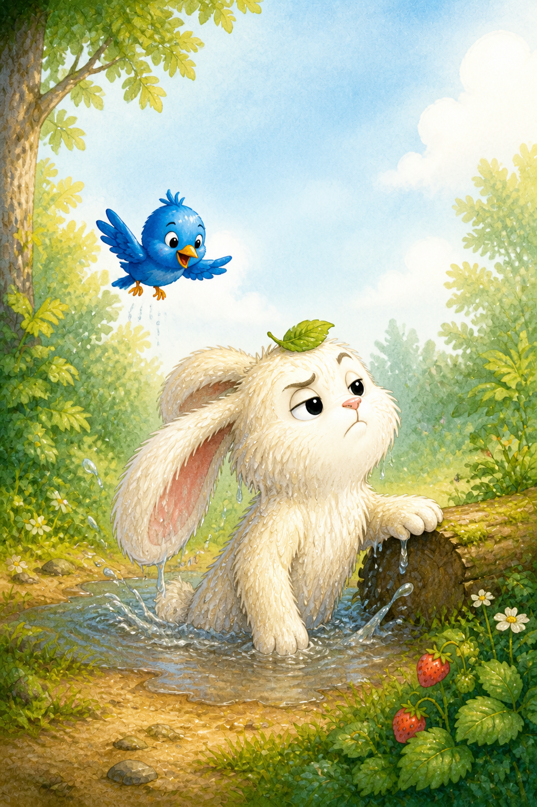
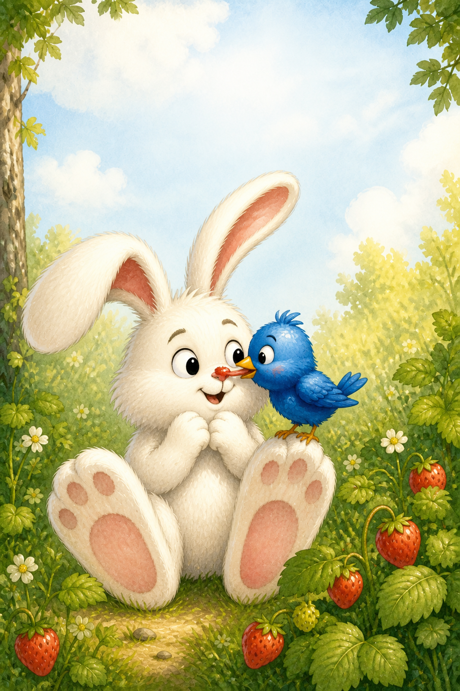
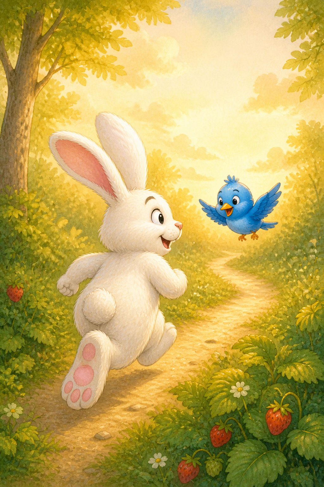

One sunny morning, Waffles woke with a very noisy tummy. Clover was too leafy. The dandelion was too yellow. Then a mushroom appeared to stare back at him. “Nope,” said Waffles, hopping away very quickly.

PIP & WAFFLES
Waffles the White Rabbit and the Very Suspicious Berry
An illustrated woodland adventure.


Waffles found the biggest, reddest berry he had ever seen. “DON’T EAT THAT!” cried a tiny blue bird. Her name was Pip. She explained that the suspicious berry would make his tummy hurt.

Pip offered to find him a safe breakfast. She flew over a log and across a puddle. Waffles jumped across it—mostly. SPLASH! “You look like a mop,” said Pip. “I am a majestic forest rabbit,” said Waffles.

Then Pip found wild strawberries. Waffles’ ears stood straight up. “I think I have found true love.” Soon his cheeks were full and strawberry covered his nose. Pip pecked it away and flew off laughing.

Still hungry, Waffles followed Pip to find lunch. “Are you sure you know what you’re doing?” he asked. “Absolutely not,” Pip said. “Perfect!” And off went two new friends with absolutely no plan at all.